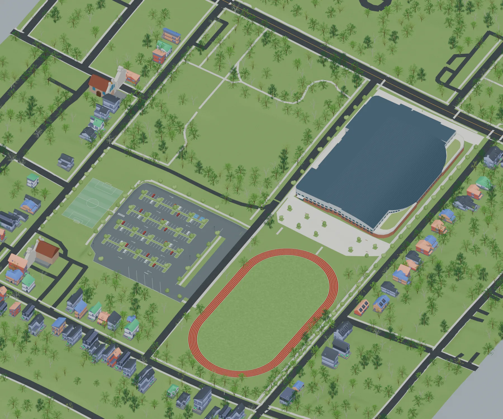
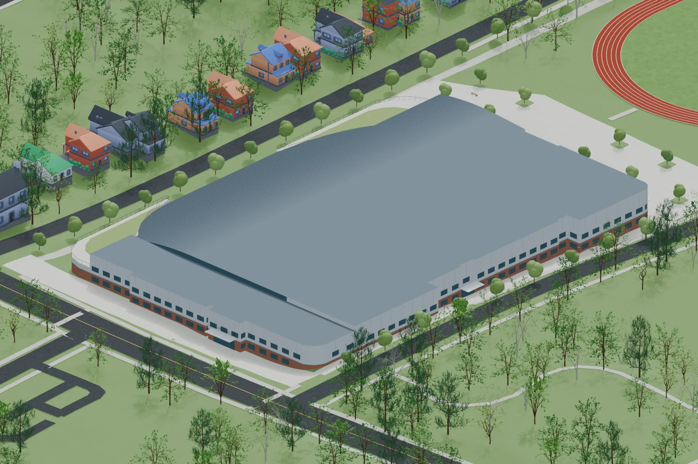
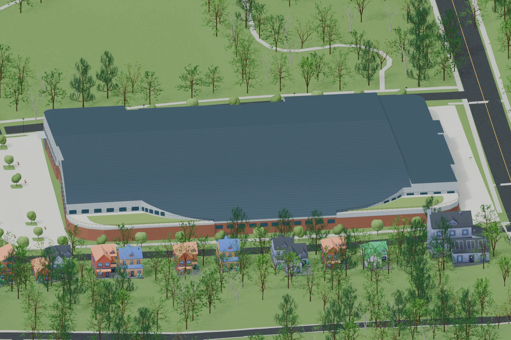
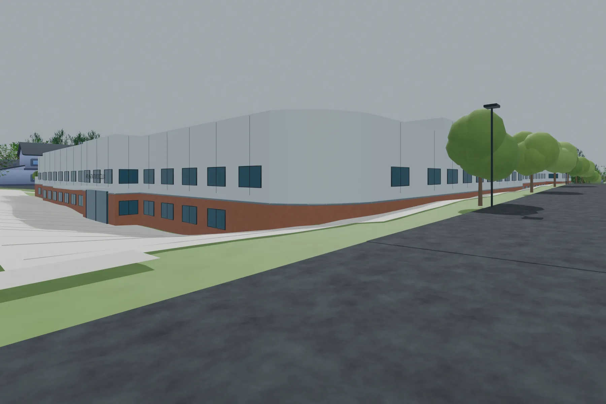
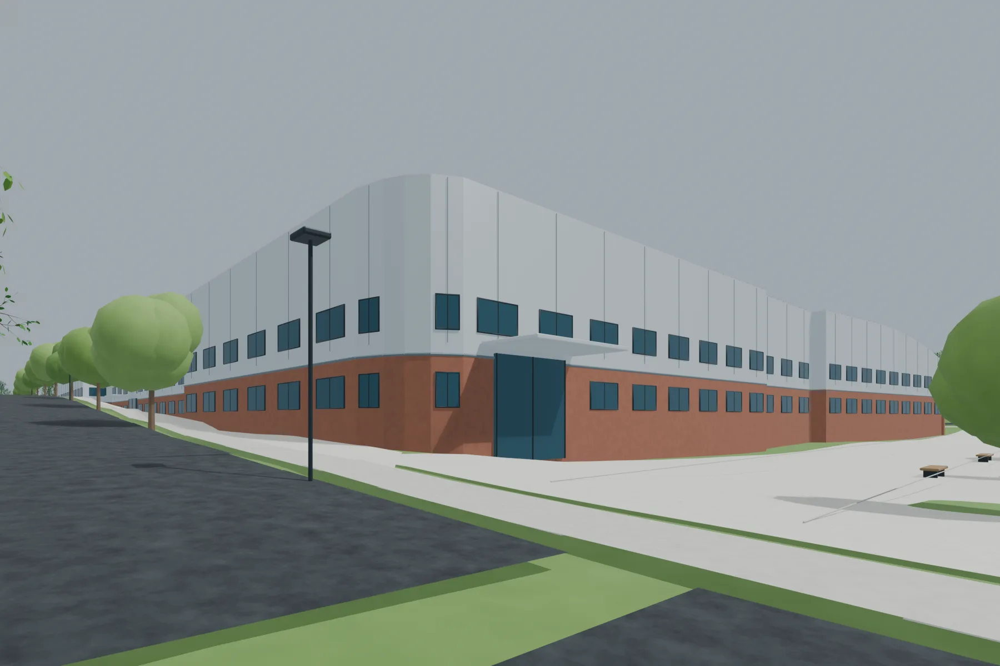
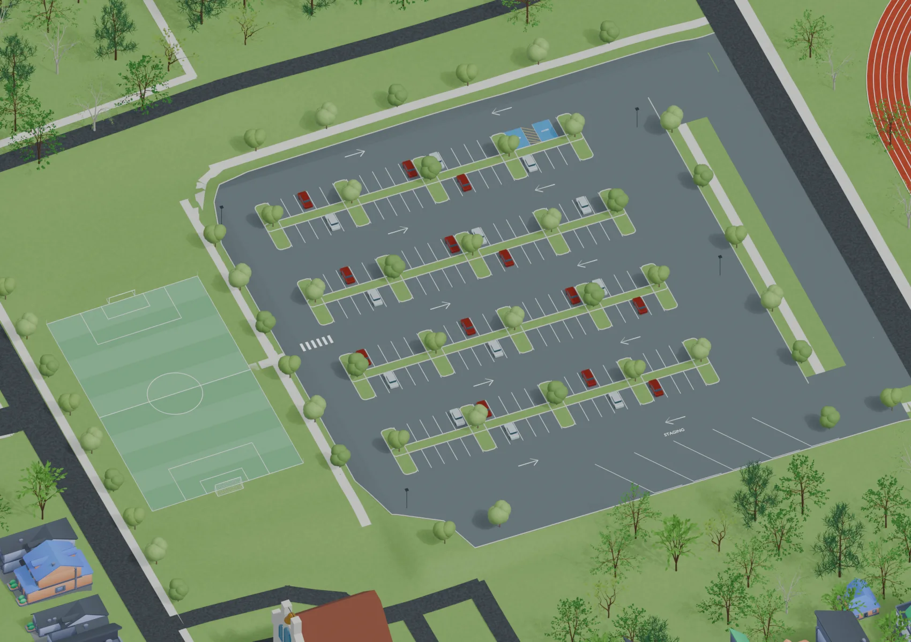

Current proposal
Proposed indoor track
The proposal is for a 3,250-seat arena that would host 30–40 events during the December–February indoor track season. Off-season events and race number pickups would also likely bring large numbers of people to the track. The building would include offices for 40–50 Atlanta Track Club (ATC) employees, a health clinic, and retail space.
Community access is planned for 30 hours a week. The proposal also includes a STEM center whose use is unspecified, Atlanta Public Schools (APS) student use that has not been defined, and commitments to training programs. In practice, this would primarily be a center for elite track athletes training for competition, including the Olympics, so residents should expect limited community use.


Building views








Parking

